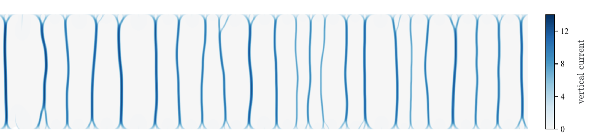
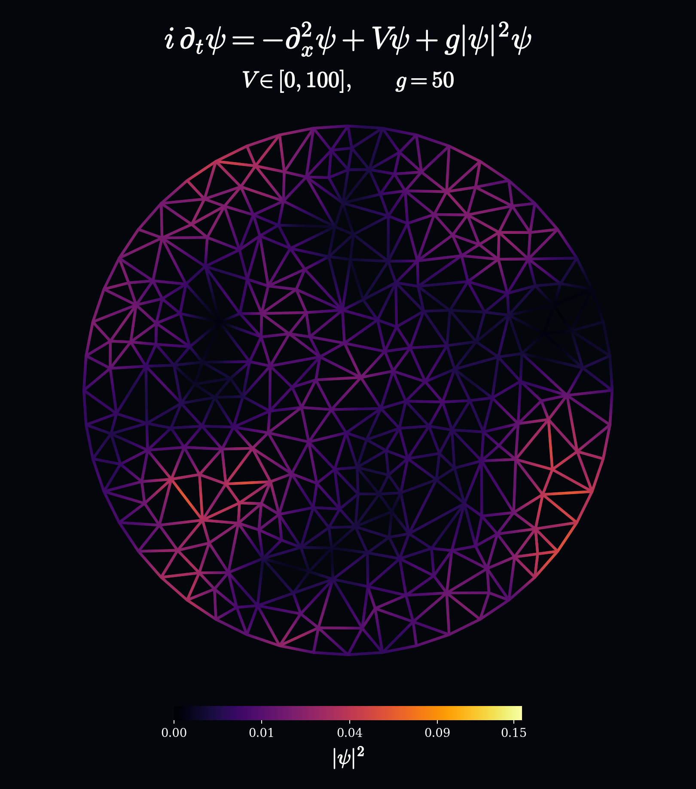

Continuum Modeling
How does the structure of a network shape transport, and how does transport reshape the network? We develop mathematical models and computational tools to investigate these questions.
From discrete networks to continuum models
Dense networks can contain far more individual connections than are practical to model one by one. We develop a continuum-limit framework that replaces equations along the edges of a network with a partial differential equation on the space it occupies.
The effective conductivity, capacity and vertex density follow from the network's geometry and microscopic properties. This links local structure to large-scale diffusion and wave propagation, allowing networks with different architectures to be studied within a common description.
How transport networks form and adapt

In adaptive transport systems, flow changes the material carrying it, and those changes redirect the flow. We study this feedback using a continuum model in which conductivity evolves as a tensor field, describing how easily fluid moves in different directions.
A finite-wavelength instability selects a preferred length scale at onset. Analysis and simulations show how conducting structures emerge from a homogeneous base state, and how channel structure and conductivity scale with the control parameter (analogous to a Rayleigh number in thermal convection).
Related preprint
Length-scale selection in adaptive transport networksSidney Holden, Mia C. Morrell, Geoffrey Vasil and Eleni Katifori
arXiv:2605.16130 · 2026
Computing dynamics on networks


Transport and wave processes on networks require equations along each connection together with conditions at junctions. We are developing a distributed spectral framework, built on Dedalus, for formulating and solving these coupled problems.
The framework combines high-order discretization on individual edges with parallel solvers on subgraphs. Applications include heterogeneous diffusion, dynamic storage at junctions, network eigenmodes and nonlinear wave propagation. These examples connect mathematical models to simulations on complex networks.
Related manuscript
Manuscript in preparation